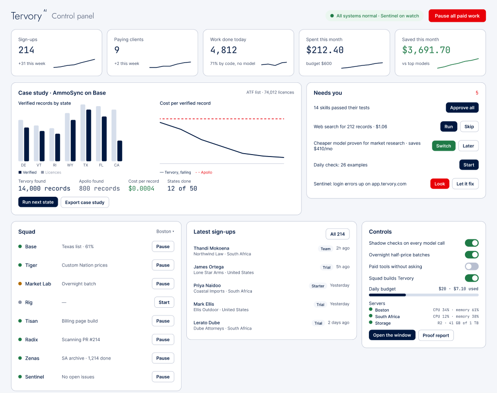

These renders use test fixtures, not production measurements. Missing sources are empty. The supplied Figma nodes are desktop frames; 375px shows the responsive adaptation.
Founder · 1440px
Approved desktop Figma frame (sample figures)

Actual component render · offline source fixture · 1440px